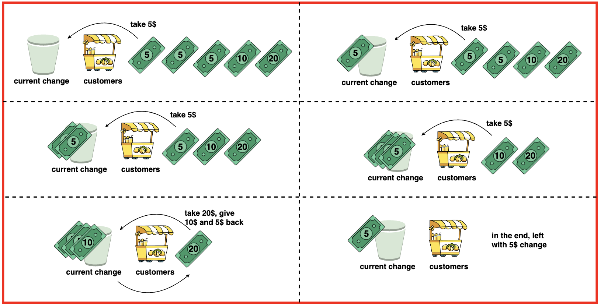
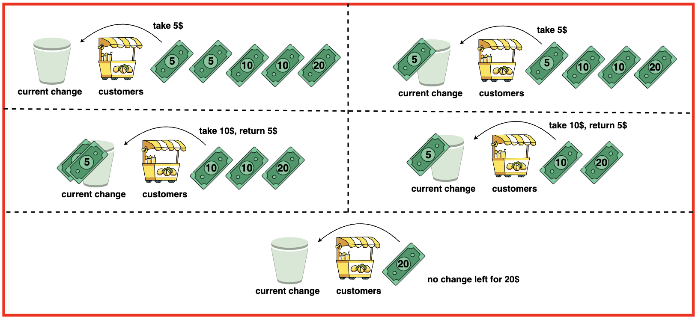

Problem Statement: Given an array representing a queue of customers and the value of bills they hold, determine if it is possible to provide correct change to each customer. Customers can only pay with 5$, 10$ or 20$ bills and we initially do not have any change at hand.
Return true, if it is possible to provide correct change for each customer otherwise return false.
Initially we have 0 change and the queue of customers is [5, 5, 5, 10, 20].
First Customer pays 5$, no change required.
Second Customer pays 5$, no change required.
Third Customer pays 5$, no change required.
The Fourth Customer pays 10$, out of the three 5$ bills we have, we pay a 5$ bill and accept the 10$ bill.
Fifth Customer pays 20$, out of the two 5$ bills and one 10$ bill we have, we pay 15$ in change and have one 5$ bill left.
Hence, it is possible to provide change to all customers.Example 2:Input: bills = [5, 5, 10, 10, 20]
Output: FalseExplanation:
Initially, we have 0 change and the queue of customers is [5,5,10,10,20].
The first customer pays 5$, no change required.
The second customer pays 5$, no change required.
The third customer pays 10$, we collect a 5$ bill and give back a 5$ bill.
The fourth customer pays 10$, we collect a 5$ bill and give back a 5$ bill.
The fifth customer pays 20$, we cannot give the change of $15 back because we only have two $10 bills.
Since not every customer received the correct change, the answer is false.

Disclaimer: Don’t jump directly to the solution, try it out
yourself first.
Optimal Approach
Algorithm / Intuition
We can approach this question by maintaining two counters to keep track of the available 5$ and 10$ bills. We iterate through the customers and provide change accordingly.
If a customer pays with a 5$ bill, we simply keep it as we will not have to provide any change. If the customer pays with a 10$ bill, we check if there is at least one 5$ bill available to provide change and decrement the counter.
If the customer uses a 20$ bill, we provide change using 5$ and 10$ bills or with three 5$ bills. If at any point, we are not able to provide the required change we return false.
Otherwise, if we successfully serve all customers with the correct change, we can return true.
Algorithm:
Step 1:Initialise two counters, fives and tens to keep track of the number of 5$ and 10$ bills at hand. Initialise them to zero as we hold no change at the starting.
Step 2: Loop through each bill in the bills array and check the following: If the bill is 5$, increment the fives counter.
Step 3:
If the bill is 10$, check if there are any 5$ bills available.
If yes, provide change by incrementing the 10$ bill counter and decrementing the 5$ bill counter.
If there are no 5$ bills available, return false as we cannot provide change.
Step 4: If the current bill is 20$, check if both 5$ and 10$ bills are available. If yes, provide change by decreasing the counter of 5$ and 10$ bills.
If there are not enough 10$ bills available, check if there are at atleast three 5$ bills available. If yes, provide change by decreasing the 5$ counter by 3.
If not able to provide change, return false.
Step 5: If all customers are served with the correct change, we exit out of the loop and return true.
Code
#include <vector>
#include <algorithm>
#include <iostream>
using namespace std;
// Function to find whether each customer can
// be provided with correct change
bool lemonadeChange(vector<int>& bills) {
// Initialize a counter
// for $5 bills
int five = 0;
// Initialize a counter
// for $10 bills
int ten = 0;
// Iterate through each customer's bill
for(int i = 0; i < bills.size(); i++){
// If the customer's
// bill is $5
if(bills[i] == 5){
// Increment the
// count of $5 bills
five++;
}
// If the customer's
// bill is $10
else if(bills[i] == 10){
// Check if there are $5
// bills available to give change
if(five){
// Use one $5 bill
// to give change
five--;
// Receive one $10 bill
ten++;
}
// If no $5 bill
// available, return false
else return false;
}
// If the customer's
// bill is $20
else {
// Check if there are both
// $5 and $10 bills
// available to give change
if(five && ten){
// Use one $5 bill
five--;
// Use one $10 bill
ten--;
}
// If there are not enough $10 bills,
// check if there are at least
// three $5 bills available
else if (five >= 3){
// Use three $5 bills
// to give change
five -= 3;
}
// If unable to give
// change, return false
else return false;
}
}
// Return true if all customers
// are served with correct change
return true;
}
int main() {
vector<int> bills = {5, 5, 5, 10, 20};
cout << "Queues of customers: ";
for(int bill : bills){
cout << bill << " ";
}
cout << endl;
bool ans = lemonadeChange(bills);
if(ans)
cout << "It is possible to provide change for all customers." << endl;
else
cout << "It is not possible to provide change for all customers." << endl;
return 0;
}
import java.util.ArrayList;
import java.util.List;
public class Main {
// Function to find whether each customer can
// be provided with correct change
public static boolean lemonadeChange(List<Integer> bills) {
// Initialize a counter
// for $5 bills
int five = 0;
// Initialize a counter
// for $10 bills
int ten = 0;
// Iterate through each customer's bill
for(int i = 0; i < bills.size(); i++){
// If the customer's
// bill is $5
if(bills.get(i) == 5){
// Increment the
// count of $5 bills
five++;
}
// If the customer's
// bill is $10
else if(bills.get(i) == 10){
// Check if there are $5
// bills available to give change
if(five > 0){
// Use one $5 bill
// to give change
five--;
// Receive one $10 bill
ten++;
}
// If no $5 bill
// available, return false
else return false;
}
// If the customer's
// bill is $20
else {
// Check if there are both
// $5 and $10 bills
// available to give change
if(five > 0 && ten > 0){
// Use one $5 bill
five--;
// Use one $10 bill
ten--;
}
// If there are not enough $10 bills,
// check if there are at least
// three $5 bills available
else if (five >= 3){
// Use three $5 bills
// to give change
five -= 3;
}
// If unable to give
// change, return false
else return false;
}
}
// Return true if all customers
// are served with correct change
return true;
}
public static void main(String[] args) {
List<Integer> bills = new ArrayList<>();
bills.add(5);
bills.add(5);
bills.add(5);
bills.add(10);
bills.add(20);
System.out.print("Queues of customers: ");
for(int bill : bills){
System.out.print(bill + " ");
}
System.out.println();
boolean ans = lemonadeChange(bills);
if(ans)
System.out.println("It is possible to provide change for all customers.");
else
System.out.println("It is not possible to provide change for all customers.");
}
}
# Function to find whether each customer can
# be provided with correct change
def lemonadeChange(bills):
# Initialize a counter
# for $5 bills
five = 0
# Initialize a counter
# for $10 bills
ten = 0
# Iterate through each customer's bill
for bill in bills:
# If the customer's
# bill is $5
if bill == 5:
# Increment the
# count of $5 bills
five += 1
# If the customer's
# bill is $10
elif bill == 10:
# Check if there are $5
# bills available to give change
if five:
# Use one $5 bill
# to give change
five -= 1
# Receive one $10 bill
ten += 1
# If no $5 bill
# available, return false
else:
return False
# If the customer's
# bill is $20
else:
# Check if there are both
# $5 and $10 bills
# available to give change
if five and ten:
# Use one $5 bill
five -= 1
# Use one $10 bill
ten -= 1
# If there are not enough $10 bills,
# check if there are at least
# three $5 bills available
elif five >= 3:
# Use three $5 bills
# to give change
five -= 3
# If unable to give
# change, return false
else:
return False
# Return true if all customers
# are served with correct change
return True
# Main function
def main():
bills = [5, 5, 5, 10, 20]
print("Queues of customers:", end=" ")
for bill in bills:
print(bill, end=" ")
print()
ans = lemonadeChange(bills)
if ans:
print("It is possible to provide change for all customers.")
else:
print("It is not possible to provide change for all customers.")
# Run the main function
if __name__ == "__main__":
main()
// Function to find whether each customer can
// be provided with correct change
function lemonadeChange(bills) {
// Initialize a counter
// for $5 bills
let five = 0;
// Initialize a counter
// for $10 bills
let ten = 0;
// Iterate through each customer's bill
for(let i = 0; i < bills.length; i++){
// If the customer's
// bill is $5
if(bills[i] === 5){
// Increment the
// count of $5 bills
five++;
}
// If the customer's
// bill is $10
else if(bills[i] === 10){
// Check if there are $5
// bills available to give change
if(five){
// Use one $5 bill
// to give change
five--;
// Receive one $10 bill
ten++;
}
// If no $5 bill
// available, return false
else return false;
}
// If the customer's
// bill is $20
else {
// Check if there are both
// $5 and $10 bills
// available to give change
if(five && ten){
// Use one $5 bill
five--;
// Use one $10 bill
ten--;
}
// If there are not enough $10 bills,
// check if there are at least
// three $5 bills available
else if (five >= 3){
// Use three $5 bills
// to give change
five -= 3;
}
// If unable to give
// change, return false
else return false;
}
}
// Return true if all customers
// are served with correct change
return true;
}
let bills = [5, 5, 5, 10, 20];
console.log("Queues of customers: " + bills.join(" "));
let ans = lemonadeChange(bills);
if(ans)
console.log("It is possible to provide change for all customers.");
else
console.log("It is not possible to provide change for all customers.");
Output
Queues of customers: 5 5 5 10 20
It is possible to provide change for all customers.
Complexity Analysis
Time Complexity: O(N)
where N is the number of people in queue/ bills we will deal with. We iterate through each customer’s bills exactly once. The loop runs for N iterations and at each iteration the operations performed are constant time.
Space Complexity: O(1) as the algorithm uses only a constant amount of extra space regardless of the size of the input array. It does not require any additional data structures that scale with the input size.
Video Explanation
Special thanks to Gauri Tomar for contributing to this article on takeUforward. If you also wish to share your knowledge with the takeUforward fam, please check out this article